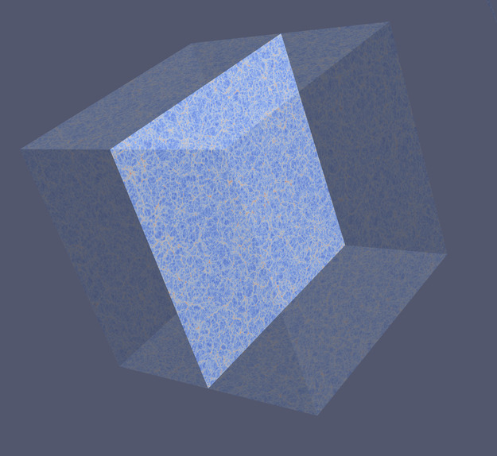

京都産業大学 宇宙論研究室
宇宙論とは
「宇宙論」は宇宙の成り立ちと進化を探る研究分野です。私たちはどこからやって来て、どこへ向かうのでしょう？ 宇宙は何でできているのか？ その形はどうなっているのか？ 果ては存在するのか？ 宇宙はどのように膨張しているのか？ この先に待つ運命は何か？ そして、これらを支配する究極の法則は何か？ こうした問いに答えるため、宇宙論では観測と理論の両面から宇宙の法則を探究します。本研究室では、宇宙を記述する理論的な枠組みである宇宙論モデル を観測データを用いて検証する「観測的宇宙論」に取り組んでいます。特に力を入れているのが、「宇宙の大規模構造」に関する研究です。観測可能な最大スケール における宇宙のあり方を、さまざまな手法を駆使して調査することで、ダークマターやダークエネルギーなど、宇宙論の大きな未解決問題に迫ろうとしています。宇宙論は我々人類が調査することができる最大スケールにおける実証科学なのです。

数値シミュレーションによって再現された宇宙の大規模構造
観測的宇宙論
「観測的宇宙論」という名称から、天文台での観測を主とする研究を想像されるかもしれません。しかし、私たちのアプローチは理論的なものに近いです。
具体的には、基礎理論をもとに「どのような観測量を見れば、どのような宇宙の性質がテストできるのか」を理論的に予測します。この予測には、解析的計算のほかに、「富岳」などのスーパーコンピュータによる数値シミュレーション を用います。これにより、銀河が描く宇宙の大規模構造がどのような統計的性質を持つか計算し、それが宇宙論モデル、そこに含まれる宇宙論パラメータと呼ばれる少数の数値、重力理論、宇宙初期に起きたインフレーションの機構の違いをどのように反映するか明らかにします。
理論予測ができるようになると、次に重要なのが「観測データと理論を照らし合わせる」作業です。これは、統計学の知見に基づく情報抽出の問題 と言えます。本研究室では、機械学習の技術を応用することで、この問題にアプローチしています。最近では、すばる望遠鏡Hyper Suprime-Camによる弱重力レンズ効果の観測データを活用し、宇宙に占めるダークマターの割合や空間分布に対して制約を行いました。そのほかにもEuclid衛星やRoman宇宙望遠鏡などの国際的な共同研究プロジェクトに参加するなど、宇宙ビッグデータ の最前線で研究を推進しています。
このように、私たちは、観測と理論をつなぐ「架け橋」としての役割を果たすことで、宇宙の根本的な謎に迫ろうとしています。また、この過程で、単なる概念実証にとどまらない、活きたデータサイエンス手法の開発・応用を行うとともに、新技術の分野をまたいだ広い応用の可能性を模索しています。
キーワード
宇宙論モデルの検証
ダークエネルギー
ダークマター
インフレーション
ニュートリノ質量の謎
宇宙の大規模構造
摂動論
N体シミュレーション
データ科学的手法の応用
宇宙ビッグデータ
シミュレーションに基づく統計推論
機械学習
エミュレータ
銀河サーベイ
本学科、本研究室についてもっと知るには
京都産業大学では、年6回のオープンキャンパスを開催しています。宇宙物理・気象学科では、教員による学科紹介のほか、在学中の本学科学生から直接話を聞ける個別相談の機会を設けています。本学科ならではの魅力的な模擬授業や体験実習も、毎回異なる内容で実施しています。詳細は、こちら をご覧ください。
次回のオープンキャンパス：2025年6月8日（日）
模擬授業：「赤外線で見る世界」
本研究室担当回：2025年9月15日（月・祝）
研究室主催者からのメッセージ：宇宙論を志す人へ
高校生のみなさんへ：京産大で宇宙論の研究はできるか？
大学入試の学力 vs 研究に必要な能力
「宇宙に興味がある！宇宙についてもっと知りたい！」と思ったときに、誰しも頭によぎるのは、東大や京大に入れるくらいの学力がなければ厳しいのではないか という疑問です。その答えは半分Yesで半分Noと考えています。
その最も大きな理由として、大学入試で問われる学力と、研究者になるために必要な能力の間の乖離が挙げられます。大学入試は、高校までの知識を前提に、限られた時間内で問題を解く競争です。高等学校普通科であれば、基本的なカリキュラムは同じなので、大学入試はある意味でフェアな競争と言えるでしょう。難関大入学の称号を得ることで、一定の社会的ステータスを得られるかもしれません。
研究者の基礎として必要な「論理展開を追いかける能力」
一方で、大学以降で学ぶ学問、そして、研究者として取り組む研究には、前提としてよい知識についての縛りはありません。それでも、高校の数学が難しくて分からなかった、物理なんて本当に苦手だったという人が果たして大学での学びに耐えられるかと言えば、かなり疑問です（もちろん、大学から追いつくことは可能です）。
では、研究を志す上でどの程度の学力が求められるのでしょうか。まず、教科書の記述を論理的に読み解けるか 、そして、難関大学の入試問題の解答解説を読んで理解できるか が、一つの目安になります。真に納得できた状態というものがどのようなもので、単に丸覚えするのとは何が違うのかを説明するのはなかなか難しいですが、以下のように例えてみましょう。教科書や解説の読解の過程を、「地図を見ながら新しい目的地まで出かけること」と例えるのであれば、「理解できた状態」とは「あの周辺には前に行ったことがあるから、もう地図を見なくても行けるよ」という状態であると表現できるかもしれません。以前に通った道や、途中にあった建物についてすべて完全に思い出すことはできなくとも、途中にあるよく知っている場所や目的地の大まかな位置、陽の出ている方向などを手掛かりに、以前とは一本隣の筋を通ったりしながら、地図を見ずにたどり着くことができるような状態です。
学問は歴史の積み重ねです。ニュートンやアインシュタインが見つけたこと、そして、彼らの時代には分かっていなかったものの、今では常識となっていることを使って、次の一手を考えるのが研究です。アインシュタインが見たことのない景色を、みなさんは見ることができるのです！ 「教科書を読み解く能力」は、ここにたどり着く際に必要となります。突飛な発想ができなくとも、自力では何も見ずに導出することができなくても、先人がすでに解いた過程を教科書で追うことさえできれば十分なのです（最初の発見者のたどった道よりも単純明快な近道を、後の研究者が見つけて教科書にまとめていることがほとんどなので、先人の苦難の道のりをすべて追いかける必要はありません）。
研究手段の多様性
研究に使っていい道具に制限はありません 。決して、教科書にまとめられた物理学の理論的な知識だけがすべてではありません。誰も考えなかった新しい道具を持ち込むこと（他分野で開発された手法の応用、実験装置の工夫、近年であればコンピュータやAIの利用など）で、革新的な研究ができるかもしれません。
また、「これまで誰も不思議に思わなかったが、よく考えると実はとても不思議である」と指摘することも立派な研究です。そのためには、例えば、他人があまり見向きをしなかったことに目を向け、観測データを来る日も来る日も何百回も確認するような、他人がやりたがらない泥臭い検証を徹底的に続ける力が新発見につながることもあります。紙と鉛筆だけではできないことをやるのが本当の研究なのです。
このように多様な能力を、高校までの学力だけから測ることは難しいでしょう（だからこそ、総合型選抜をはじめとした多様な入試制度があるわけですね）。大学から先の学びにおいては、制限時間内に、何も見ずに、答えがあると分かっている問題に取り組む大学入試とは、全く異なる力が問われるということが分かっていただけたでしょうか。
本研究室の理念：宇宙論を「大学受験エリート」だけのものにしない
人の成長のスピードはさまざまですが、18歳前後における学力だけで将来を諦めてしまってよいのでしょうか。この意味で、本研究室は、世界の名だたる研究者がしのぎを削る宇宙論分野を、いわゆる「大学受験エリート」だけのものにしたくないと願っています。また、大学入試の限られた尺度では選抜されない隠れた逸材を発掘したいと思っています。
本学科では、毎年、多くの学生が大学レベルの理系分野の素養をきちんと身につけ、３割強の学生が大学院へと進学していきます。本研究室でやりたい研究テーマを見つけ、東大の大学院に進学した学生もいますが、現在の研究分野の動向をよく知る一研究者の立場から、このように将来の道を示すことこそが、まさに本学科、本研究室が提供できる最大の社会貢献ではないかと考えています。
本学からの進学先は、学内外の大学院で概ね半々ですが、もちろん京都産業大学の大学院でも世界に通用する研究ができます。学科の規模を考えたとき、大規模な国立大学理学部と比べると、カバーできる研究テーマの幅には限りがありますが、宇宙・気象の諸分野に11名の専門教員を配置する本学科は、一般的な物理学科の中に少数の宇宙専門教員を置く学科と比べて、より充実した専門教育と研究環境を提供しています。大学院進学時はぜひとも大学名ではなく、本当にやりたい研究テーマで選んでほしいです。
都心の喧騒から離れ、国内私大最大の望遠鏡を学内に擁する、本学の落ち着いた環境で、一緒に宇宙について考えたいと思うたくさんのみなさんの挑戦を心よりお待ちしています。
高校までに身につけてほしいこと
宇宙について深く考えるためには、高校数学（特に微分・積分）と、物理学の基礎（特に力学）をしっかり身につけることが重要です 。大学受験のための「丸暗記」や「テクニック」だけでは、大学での学びに太刀打ちできません。
高校時代から意識してほしいのは、教科書の記述を論理的に読み解く力です。まず、数学の魅力は、少数の定義や公理から論理的に導かれる体系にあります。単なる暗記ではなく、定義から定理を導く過程を理解することが重要です。円滑な計算の実行のために、頻出の式変形法や公式を覚えることも必要ですが、これらも元をたどれば定義や公理に基づいて導くことができます。「加法定理を証明せよ」という問題がかつて東大入試で問われたことは有名です。
物理学も本来、数学と同様に少数の基本原理から演繹的に展開される美しい理論体系を持っています。しかし、高校の段階では、学習済みの数学的なツールが限られているため、関連する様々な法則が、個々に覚えざるを得ない独立したものであるかのように紹介されることが多くなります。このため、物理は「個別の法則を覚える科目」という印象を持たれがちです。本来であれば、より少数の原理のみから整理することも可能ですが、それを実感するには大学以降の学びを待つ必要があります。
物理学は数学を道具として発展してきました。高校物理でも、すでに数学の重要な概念が用いられています。例えば、運動の記述には「ベクトル」の考え方が不可欠であり、波の性質を理解するには「三角関数」が必要です。これらは、高校数学の範囲でも学びますが、物理ではそれらを単なる計算手法ではなく、現象を定量的に理解するための道具として用います。そして、より本質的に物理現象を記述するためには、本来「微分・積分」が不可欠ですが、高校物理では意図的に避けられています。大学以降の学びでは、数学的ツールをより自由に使えるようになり、物理の理論が少数の基本法則から統一的に導かれる様子が実感できるでしょう。
こうした背景を踏まえれば、高校時代から「なぜそうなるのか」を意識し、教科書を論理的に読み解く習慣を身につけることの重要性がわかります。特に、力学はシンプルな体系を持ち、物理の考え方を鍛える最良の練習になります。また、物理を学ぶ上で、物理量が次元（単位）を持つことを意識するのは非常に重要です。次元を考えるだけで、未知の量の性質や既存の量との関係を見抜く手がかりになります。これは、数学で未知数を x と置く操作以上の意味を持っており、物理学の根幹に関わる概念です。
物理法則とは、次元を持つ個々の物理量同士を結びつけるものです。深い考察を通じて数式の持つ意味を見出せるようになることこそ、物理学の醍醐味と言えます。そして、こうした論理的体系を実感する場として、難関大学の入試問題が挙げられます。入試問題は単なる知識の確認ではなく、限られた数の原理から物理現象をどこまで説明できるかを試すものでもあります。高校数学と物理学の基礎を固め、思考力を鍛えることで、大学での学びに確かな土台を築くことができます。
京都産業大学 理学部 宇宙物理・気象学科で学べること
低学年から学べる専門性と多様な研究分野
本学科では、宇宙や気象に関する専門的な講義を比較的低学年(2, 3年次)から受講することで、これらの分野について体系的に学ぶことができます 。私が担当する宇宙論関連の講義でも、できる限り分野内外の最新の進展を取り入れ、教科書に載るような確定的な事柄だけでなく、論争中の事項や未解決問題についても積極的に紹介するようにしています。これらを通じて、卒業研究や大学院での研究についてより具体的にイメージしてもらうとともに、基礎科目の学習意欲を高めてもらいたいと考えています。
これらの講義を通じて学問領域を俯瞰した上で、４年次講義「特別研究」（卒業研究に相当）では、いずれかの研究室に配属されて、より専門的な学習と研究に取り組むことができます。学年あたり40名の定員に対して、11名の専任教員が所属しているため、多様な研究分野から選択することが可能である上に、国公立大学並みの教員あたり学生数を実現し、手厚い指導を受けることができます 。
「宇宙」という広大な研究領域
入学する学生の多くは「宇宙に興味がある」という漠然とした動機を持っているようですが、一方で、特定の研究テーマに対する興味や知識を持つ意識の高い学生も毎年何人か見かけます。「専門は宇宙です」は、「スポーツ選手です」と言っているようなものです。マラソンなのか、レスリングなのか、卓球なのか、はたまたサッカーなのか、「スポーツ選手」だけではその人の職業についてあまりよく分かりませんよね。
宇宙には多岐にわたる研究対象が存在し、それぞれに興味深い、未解明の研究テーマが存在します 。本学科の講義では、皆さんがまだ出会っていない、本気で取り組んでみたいと思えるテーマに巡り合ってもらうことを一つの重要な目的としています。
テレビで見た、雑誌で読んだ、あるいは、高校の探究の授業で学んだ興味深い研究テーマも、5年先、10年先にはすっかり廃れてしまうということだってあるかもしれません。一般受けする研究テーマと、現場の研究者（少なくとも私）が重要と考えている研究テーマの間には、大きなずれがあります。
そのため、入学時に特定の研究テーマに対して強いこだわりを持つことは、必ずしも良い方向に働くとは限らないのです。
入学時にブラックホールしか知らなくても大丈夫です。周りの意識の高い学生と比較して悲観する必要は全くありません。宇宙にはそれ以上に奇妙で美しく、まだまだ知られていないものがたくさんあるのですから。高校までに聞きかじった宇宙の知識よりも、数学や物理学の学習に励み、どんな研究分野を選んでも通用する基礎学力を獲得することの方が遥かに重要です 。卒業後に民間企業への理系就職を考えた場合にも同じことが言えます。
宇宙と気象-二つの研究領域
「宇宙物理・気象学科」と称する本学科ですが、例年、宇宙分野に興味を持って入学してくる学生がやや多数派のように感じます。実際には、学科の専門講義を受講することで、我々の生活により身近な気象分野に興味が移る人が相当数おり、卒業研究の配属研究室選定時（3年生冬）には、ちょうど半々程度になっています。
いずれの分野でも、数学・物理学・データサイエンスといった基礎的なツールが重要であり、共通言語として活用されています。卒業後は大学院に進学する学生もいれば、民間企業に就職する学生もいますが、本学科では、どの進路でも活躍できる高度な理系人材の育成を目指しています。
大学院での研究指導を希望する方へ
博士前期課程（修士課程）
大学院に進学すると、自分の専門分野についてより深く学び、研究を通じて新しい知見を生み出すことが求められます。しかし、特に修士課程の段階では、研究そのものよりも基礎的な勉強の比重が大きくなります。高度な研究を行うためには、その前提となる知識や技術を身につける必要があり、そのための時間を確保しなければなりません。教科書を読み込み、論文を精読し、理論や手法をしっかり理解することが、修士課程の最も重要な課題のひとつです。
また、修士課程における研究は、基本的に指導教員の助言を受けながら進めることになります。通常、研究の主導権はまだ学生自身にはなく、テーマ設定や研究の進め方も教員との相談のもとで決まります。そのため、修士の間に投稿論文として世に出せる成果は、多くの場合、せいぜい1本程度にとどまります。修士課程は「独自の研究を展開する」というより、「研究を行うための基礎を固める期間」と考えるのが現実的でしょう。
博士後期課程（博士課程）
博士課程に進むと、研究活動の進め方は大きく変わります。修士課程では与えられたテーマに取り組むことが中心でしたが、博士課程では、研究分野の最新動向を理解し、自ら研究テーマを策定し、独自のアプローチで研究を推進することが求められます。もちろん、指導教員の助言やサポートを受けることはできますが、研究の主体は学生自身へと移行し、より自主的な取り組みが求められます。
さらに、博士課程では研究の意義や将来の展望を考える力も必要になります。単に知識や技術を身につけるだけでなく、「どのような研究をすべきか」を自ら考え、実行することが重要です。この段階に至ると、学会発表や論文執筆の機会も増え、学術コミュニティの中での立ち位置を意識しながら活動するようになります。ある程度まとまった研究成果を世に出せれば、国内外の関連研究分野の研究者から認知されるようになるかもしれません。博士課程は、単なる学びの場ではなく、「研究者としての訓練の場」としての側面が強くなるのです。
英語とプログラミング - 実践の中で身につく技能
英語 やプログラミング の習得は、大学院進学後でも十分間に合います。ただし、その前提として、大学学部レベルの数学や物理学を十分に身につけるとともに、日本語で書かれた専門書を問題なく読みこなせる論理的な読解力を養っておくことが求められます。海外に挑戦するサッカー選手を想像してみてください。語学力だけ高くても、肝心のサッカーの技術や戦術理解が伴わなければ、海外で活躍の場を得ることは難しいでしょう。同様に、研究者としての英語力やプログラミングスキルも、学問の基礎力がなければ意味をなしません。
例えば、私自身、大学院進学時にはプログラミングの経験がほぼゼロで、英語もTOEICすら受けたことがなく、辞書を片手に時間をかけて何とか英語で書かれた教科書を読める程度でした。加えて、出身学部は物理学科だったので、宇宙論に必要な天文学の基礎知識（例えば、星や銀河に関するもの）もそれほどありませんでした。それでも、学部時代に学んだ物理学や初等的な数学の知識は、これらの知識や技術を身につける土台となりました。
大学院では、研究を進める中で、実際に使われている数値計算コードを解析し、必要な機能を追加していくことで、プログラミングを習得しました。自転車の乗り方を説明書で学ぶ人はいません。実際に乗ってみて、バランスを崩しながら少しずつコツをつかんでいくものです。プログラミングの習得は、この感覚と似ています。適切な入門書は参考になりますが、実際に動くコードを触りながら解きたい問題に挑む方が効果的です。
英語についても、研究室に長期の外国人ビジターが滞在したり、外国籍の研究員が在籍していたことが、英語による研究活動を当たり前にできるようにする上で非常に役に立ちました。英会話については、まずメンタルバリアを打ち破ることが重要です。本研究室では、海外の研究機関との共同研究が活発に行われており、数値計算が中心的な研究手法となっています。そのため、大学院進学後には、実践を通じて英語やプログラミングを身につけられる環境が整っています。